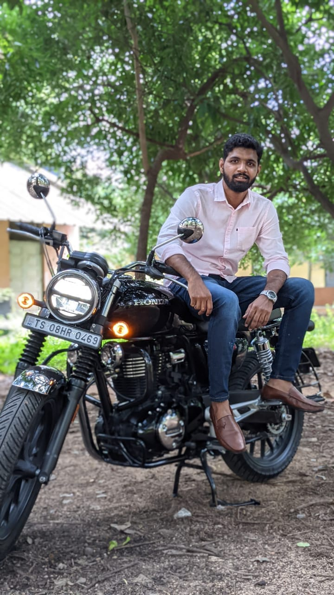

This is my first motor cycle I bought with the money I saved while I was working. I named it Black Shark. I even love the color black and that is why I chose it. This is very close to me which am missing a lot now.
This has taken me to many places. Whenever I feel like am in stress, I just take it out for a spin and this had always been my stress buster.
I like this caption which says "Four wheels moves the body, two wheels move your soul". When I take it out for a spin, I like that wind on my face that hits me. This has made me even more travel enthusiast. I used to go for long rides with biker clubs which has given me a good confidence. I would always prefer two wheels than four.
 back